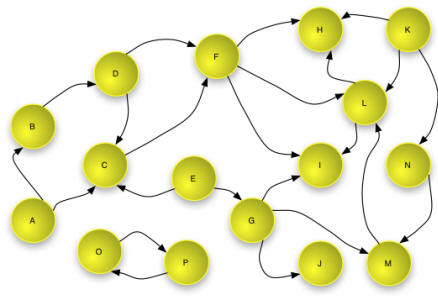
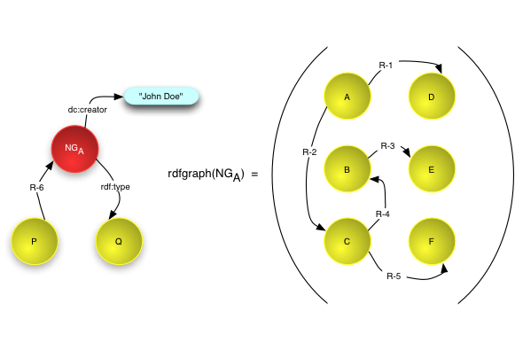
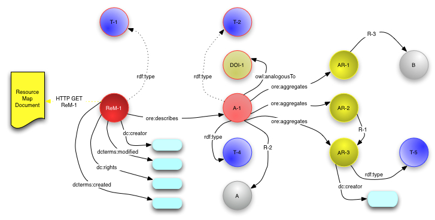

|
Open Archives Initiative Object Reuse and Exchange |
|
Open Archives Initiative Object Reuse and Exchange |
DO NOT USE THIS SPECIFICATION, see instead the CURRENT ORE SPECIFICATIONS.
This document was part of an alpha release and has been superseded.
Open Archives Initiative Object Reuse and Exchange (OAI-ORE) defines standards for the description and exchange of aggregations of Web resources. This document provides a brief overview of the abstract data model underlying these standards, serializations, implementation with HTTP, and discovery. This user guide is one of several documents comprising the OAI-ORE specification and user guide. It is intended as the place to start for first time readers.
1. Introduction
2. Foundations
2.1 Web Architecture
2.2 Semantic Web and RDF
2.3 Named Graphs
2.4 Namespaces and Vocabularies
3. Data Model
3.1 Aggregation
3.2 Resource Map
3.3 Relationships to other Aggregations
4. Serialization
5. HTTP implementation
6. Discovery
7. References
A. Acknowledgements
B. Change Log
The ORE Model makes it possible to associate
an identity with aggregations of web resources and to describe their structure
and semantics. It does this by introducing the Resource
Map (ReM), which is a resource identified by a URI (say
ReM-1) that encapsulates a set of RDF statements. These statements
instantiate an aggregation as a resource with a URI, enumerate the constituents
of the aggregation, the relationships among those constituents, and the Web
context of the aggregation.
The ORE Model can be serialized in a variety of formats which will be described,
along with mappings of ORE Model concepts, in companion ORE documents. The
primary serialization is Atom [ORE Atom
User Guide, ORE Atom Profile]. Direct RDF
serialization is described in [Representing
Resource Maps Using RDF Syntaxes].
A full description of Web Architecture concepts is contained in [Web Architecture]. For the remainder of this document, the use of the following terms from the Web Architecture SHOULD be interpreted as briefly summarized below:
The combination of these concepts forms what is commonly referred to as the Web Graph, with nodes that are URIs (which identify Resources), from which Representations are made available, and edges that are Links. An example of a Web graph is shown below. Note that this example shows that the Web graph is not necessarily connected - nodes O and P link to each other but not to other nodes in the graph.

This specification also leverages Semantic Web concepts from RDF [RDF Concepts]. In RDF, Resources are described using sets of triples, each made up of three parts: a subject, a predicate and an object. The subject is a URI that identifies the described Resource; the object is either the URI of a second Resource or a literal that identifies values such as numbers and dates by means of a lexical representation; and the Predicate is a URI that identifies a type of relationship. Each triple states that a relationship of the type indicated by the Predicate (a URI) holds between the Resource identified by the subject (a URI) and the object (a URI or a Literal).
A set of RDF triples is referred to as an RDF Graph because it can be represented as a node and directed-arc diagram, in which each triple is represented as a node-arc-node link. The nodes of an RDF Graph are the subjects and objects of the constituent triples. In an RDF Graph each node is connected to at least one other node in the graph.
Note: this is a slight simplification of the RDF model because it ignores the concept of "blank nodes". The ORE model does not make use of "blank nodes" and they are not discussed further in this document
An example of an RDF Graph is shown in the figure below. As shown, the subject and Predicate of a triple are always URIs (the URI is indicated by the text in the yellow circle and shown with bracketed syntax <A> in the table) and the object may be a URI or a literal (shown as a blue rounded rectangle in the graph and in quotations in the table).

Example triples in this document are show in Notation3 [N3] format, e.g.
<URI-1> rdf:type <T-1>. <URI-1> dc:creator "Joe Bloggs".
Which means that resource URI-1 has type denoted with the URI T-1,
and was created by Joe Bloggs.
Another tool from the Semantic Web, the RDF Vocabulary Description Language [RDFS], provides the mechanisms to define vocabularies for defining the types of these relationships. In combination with the RDF-defined relationship rdf:type this vocabulary makes it possible to express types for Resources. The figure below shows an example of this. As shown, the objects of the triples with rdf:type Predicates are URIs, that denote classes or types.

Finally, this specification builds on the notion of a Named Graph [Named Graph], which extends RDF to allow the association of a name - a URI - with a set of triples - a graph. A number of aspects of Named Graphs are shown in the figure below.

The ORE Model uses predicates from a number of vocabularies including one specific to ORE which is descibed in the ORE Vocabulary specification. In these specifications we use the following namespace prefixes.
| Prefix | Namespace URI | Description |
|---|---|---|
dc |
http://purl.org/dc/elements/1.1/ |
Dublin Core elements |
dcterms |
http://purl.org/dc/terms/ |
Dublin Core terms |
ore |
http://www.openarchives.org/ore/terms/ |
ORE vocabulary terms |
owl |
http://www.w3.org/2002/07/owl# |
OWL vocabulary terms |
rdf |
http://www.w3.org/1999/02/22-rdf-syntax-ns# |
RDF vocabulary terms |
A Resource Map describes an Aggregation which is a set of resources, and possibly their types and relationships among the resources. Resources in the Aggregation are called Aggregated Resources.
In order to be able to talk about the Aggregation on the web, it must have a URI
(say A-1). The ORE Model requires that a Resource Map describe just
on Aggregation. There may be multiple Resource Maps in different formats that
describe the same Aggregation. In order that applications and clients can reference
the Aggregation in an actionable fashion, the URI A-1 must yield or
lead to a the Resource Map when derefenced. This is likely to be achieved in
on of two ways:
A-1 may be constructed by appending
a fragment identifier #aggregation to the Resource Map URI
ReM-1. For example, the Resource Map available from the URI
http://sample.org/ReM-1 might describe the Aggregation
http://sample.org/ReM-1#aggregation. This syntactic trick
allows the creation of an Aggregation URI A-1 that correctly
yeilds the corresponding Resource Map without the need for an additional
infrastructure beyond a web server to return the Resource Map from URI
ReM-1.A-1 to the Resource Map. This is described in detail in
FIXME_WHERE_IS_THIS_DESCRIBED, an example would be A-1
http://sample.org/A-1 which yields
http://sample.org/A-1.xml or
http://sample.org/A-1.rdf depending on content negotiation
for Atom or RDF/XML serializations.
A Resource Map is obtained as a representation of the resource identified
by the protocol-based URI ReM-1. The following figure shows a
complete Resource Map with statements indicated as arrows from subject resource
to object resource or literal. The remainder of this section explains the
components of this graph step-by-step.

ore:similarTo predicate instead of
owl:analogousTo.The Resource Map is identified by ReM-1 and an HTTP GET on ReM-1
must yield a serialization of the Resource Map. Note also that ReM-1
appears as a node in the figure and is the subject of several triples. First, there
must be triples providing the type of the Resource Map, the type of the Aggregation,
and linking the Resource Map to the Aggregation that it describes:
# mandatory, ReM-1 is a Resource Map (shown as T-1) <ReM-1> rdf:type ore:ResourceMap. # mandatory, A-1 in an Aggregation (shown as T-2) <A-1> rdf:type ore:Aggregation. # mandatory, ReM-1 describes A-1 <ReM-1> ore:describes <A-1>.
Some metadata about the Resource Map is mandatory, and additional metadata may optionally be expressed:
# mandatory: authoring authority and modification time of ReM <ReM-1> dc:creator <http://example.org/joebloggs>. <ReM-1> dcterms:modified "2007-10-15T00:00:00Z". # optional: rights pertaining to and original creation time of ReM <ReM-1> dc:rights <http://creativecommons.org/licenses/publicdomain/>. <ReM-1> dcterms:created "2007-10-15T00:00:00Z".
If the Aggregation denotes an information object that has other identifiers
then these are expressed using the ore:similarTo predicate:
<A-1> ore:similarTo <DOI-1>.
For the particular case where the ORE Aggregation is also identified
by another URI then the owl:sameAs predicate my be used.
All of the Aggregated Resources are linked to the Aggregation with the
ore:aggregates predicate:
<A-1> ore:aggregates <AR-1>. <A-1> ore:aggregates <AR-2>. <A-1> ore:aggregates <AR-3>.
Thus far, the Aggregation is just a bag of resources, AR-1,
AR-2, and AR-3, unrelated except for their status as
constituents of the Aggregation.
A Resource Map may also describe the structure of the Aggregation by expressing internal
relationships between the Aggregation and/or Aggregated Resources, for example:
# shown as R-1 <AR-2> dc:hasFormat <AR-3>.
Finally, the Resource Map may include two types of external relationships: 1)
Semantic types may be associated with either the Aggregation and/or the Aggregeted
Resources using the rdf:type predicate.
2) The context of the Aggregation among other other resources may be expressed using
predicates in any vocabulary provided either the subject or object is the Aggregation
or and Aggregated Resource.
# A-1 has type T-4 (journal article perhaps) and is part of resource A <A-1> rdf:type <T-4>. <A-1> dcterms:isPartOf <A>. # AR-1 references B (perhaps another article) and has type Text <AR-1> dcterms:references <B>. <AR-3> rdf:type <http://purl.org/dc/dcmitype/Text>.
When reusing Resource Maps and the Aggregations that they descibe, it is important
to remember the distinction between these two concepts. Statements about ReM-1
are statements about the Resource Map and not the Aggregation; statements about
A-1 are statements about the intellectual object that is the Aggregation.
An Aggregated Resource may be aggregated in more than one Aggregation (say
A-1 and A-2). The predicate ore:isAggregatedBy
is the inverse of ore:aggregates and allows membership in another
Aggregation to be expressed.
# Creator of ReM-1 knows AR-1 aggregated by A-2 as well as A-1 <AR-1> ore:isAggregatedBy <A-2>.
It is expected that a Resource Map describing the Aggregation A-2
can be obtained when A-2 is dereferenced.
A second use of ore:isAggregatedBy is to indicate nesting, where
one Aggregation an Aggregated Resource in another Aggregation. Image that
A-1 is a journal article which is part of a journal issue
(Aggregation A-3). This context can be expressed in ReM-1
with the following triple.
# ReM-1 indicates that aggregation A-1 is aggregated by A-3 <A-1> ore:isAggregatedBy <A-3>.
This document is the work of the Open Archives Initiative. Funding for Open Archives Initiative Object Reuse and Exchange is provided by the Andrew W. Mellon Foundation, Microsoft, and the National Science Foundation. Additional support is provided by the Coalition for Networked Information.
This document is based on meetings of the OAI-ORE Technical Committee (ORE-TC), with participation from the OAI-ORE Liaison Group (ORE-LG). Members of the ORE-TC are: Chris Bizer (Freie Universität Berlin), Les Carr (University of Southampton), Tim DiLauro (Johns Hopkins University), Leigh Dodds (Ingenta), David Fulker (UCAR), Tony Hammond (Nature Publishing Group), Pete Johnston (Eduserv Foundation), Richard Jones (Imperial College), Peter Murray (OhioLINK), Michael Nelson (Old Dominion University), Ray Plante (NCSA and National Virtual Observatory), Rob Sanderson (University of Liverpool), Simeon Warner (Cornell University), and Jeff Young (OCLC). Members of ORE-LG are: Leonardo Candela (DRIVER), Tim Cole (DLF Aquifer and UIUC Library), Julie Allinson (JISC), Jane Hunter (DEST), Savas Parastatidis (Microsoft), Sandy Payette (Fedora Commons), Thomas Place (DARE and University of Tilburg), Andy Powell (DCMI), and Robert Tansley (Google, Inc. and DSpace)
We also acknowledge comments from the OAI-ORE Advisory Committee (ORE-AC).

This work is licensed under a Creative Commons Attribution-Noncommercial-Share Alike 3.0 Unported License.
Use of this page is tracked to collect anonymous traffic data. See OAI privacy policy.